1はじめに
動きで見る：名前を登録する
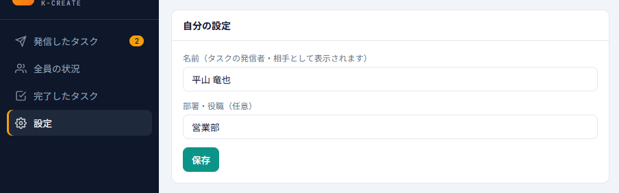
この順に押します
タスク管理は、自分のやること・人に頼んだこと・人から頼まれたことを、付箋のように1枚ずつ並べて管理する社内サイトです。会社の Google アカウントで開いてください。
初めて開いたとき：許可する
- Google の「許可」を求める画面が出たら、自分の会社アカウントを選び、内容を確認して 「許可」 を押してください。
- 「タスク管理：許可の追加」という画面が出たときも、同じように許可してください（機能が増えたときに出ます）。
- スケジュールや Gmail の欄に「許可の追加が必要です」と出たら、その中の 「許可する」 ボタンを押してください。
許可するのは、タスクを保存する表・自分のメールアドレス・自分のカレンダー（予定の表示と追加）・自分の Gmail の未読（読むだけ）です。
名前の登録
名前は社内スタッフ名簿から自動で登録されています。登録されていない人には、最初に「はじめに、名前を登録してください」と出ますので、フルネームを入れて保存してください。名前はタスクの「発信者」や「相手」として表示されます。
あとから直すときは、左下の自分の名前（「変更」）か、メニューの 設定 → 「自分の設定」で変えられます。
2画面の見方
動きで見る：画面のどこに何があるか
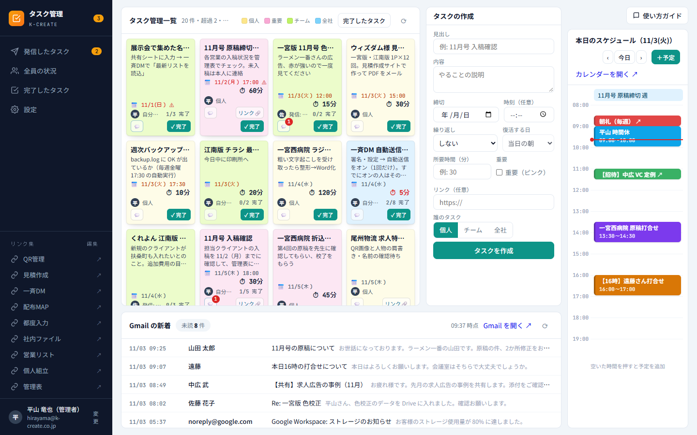
見る場所
- 左のメニュー：発信したタスク／全員の状況（見られる人だけ）／完了したタスク／設定。下に「リンク集」と自分の名前があります。
- 使い方ガイド（右上）：このガイドが新しいタブで開きます。どの画面でも右上にあります。
- タスク管理一覧（中央）：今やるタスクが付箋で並びます。締切が近い順です（締切なしは最後）。
- タスクの作成（右）：新しいタスクを作ります。
- 本日のスケジュール（右端）と Gmail の新着（下）：自分のカレンダーと未読メールです。
左上の「タスク管理」を押すと、いつでもこの画面に戻れます。画面を開いている間は、数分ごと（初期は5分）に自動で新しい内容に更新されます。すぐ更新したいときは一覧の右上の ⟳ を押してください。
3タスクを作る
動きで見る：チームのタスクを作る
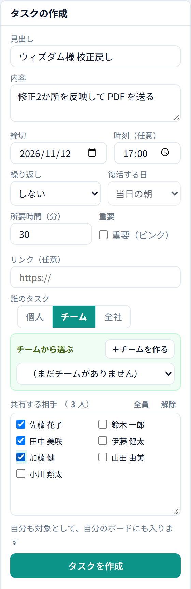
この順に押します
動きで見る：チームを作って選ぶ
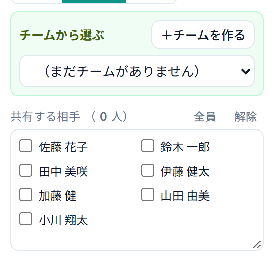
この順に押します
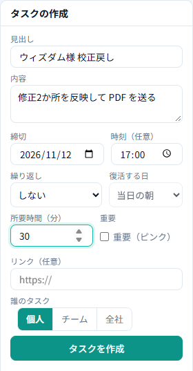
入れる内容
| 見出し | 必ず入れます。付箋には1行で表示されます。 |
|---|---|
| 内容 | やることの説明です（任意）。付箋には3行まで表示されます。 |
| 締切・時刻 | 締切の日付と、必要なら時刻を入れます。締切なしでも作れます。 |
| 所要時間（分） | どれくらいかかるかの目安です。▲▼ を押すと 1 → 2 → 3 → 5 → 10 → 15 → 20 …（5分から先は5分ずつ）と変わります。キーボードで数字を打つことももちろんできます。 |
| 重要 | チェックすると付箋がピンクになります。 |
| リンク | 関係する資料（Drive など）の URL です。付箋に「リンク🔗」ボタンが出ます。http:// か https:// で始めてください。 |
| 繰り返し | 毎週・毎月など、定期的なタスクにするとき使います（8. 繰り返し）。 |
誰のタスク？（個人・チーム・全社）
- 個人：自分だけのタスクです。
- チーム：「共有する相手」で、頼みたい人にチェックを入れます。保存したチームを選ぶと、そのメンバー全員にチェックが入ります（下の「チームを作る」）。
- 全社：全員にチェックが入った状態になります。外したい人だけチェックを外してください。
相手の一覧が見づらいときは、一覧の枠の 右下の角をつまんで下に引っぱる と広げられます（内容の欄と同じです）。「全員」「解除」でまとめて選んだり外したりできます。
最後に 「タスクを作成」 を押すと、自分と相手のボードに付箋が出ます。
チームを作る（保存したチーム）
よく頼む顔ぶれは「チーム」として保存しておくと、次から1回で選べます。だれかが作ったチームは、全員が使えます。
- 「誰のタスク」で 「チーム」 を押し、「＋チームを作る」 を押します。
- チーム名（例：営業1課・一宮チーム）を入れ、メンバーにチェックを入れて「保存」します。
- 次からは 「チームから選ぶ」 でチームを選ぶだけで、メンバー全員にチェックが入ります。
- チームを選んだあとも、1人ずつ足したり外したりできます（そのときはチームの選択が外れて「1人ずつ選ぶ」になります）。
- これまでどおり、チームを使わずに1人ずつチェックして選ぶこともできます。
- チームの 「修正」（名前・メンバーを直す・削除）ができるのは、作った人と管理者だけです。
4付箋の色と見方
動きで見る：付箋のどこに何があるか
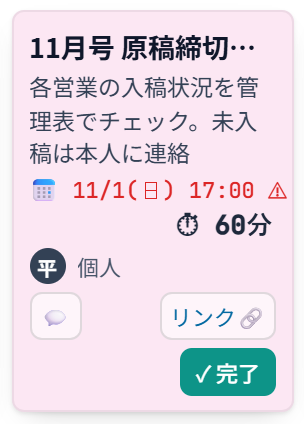
見る場所
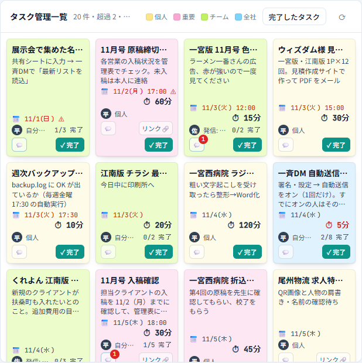
色は種類で決まります
| 色 | 種類 |
|---|---|
| 黄 | 個人のタスク |
| ピンク | 重要（どの種類でも重要にするとピンク） |
| 黄緑 | チームのタスク |
| 水色 | 全社のタスク |
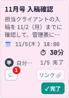
付箋に書いてあること
- 見出し・内容
- 📅 締切：締切を過ぎると 赤字と ⚠、今日が締切だとオレンジ色になります。🔁 は繰り返しのタスクです。
- ⏱ 所要時間：5分以内のものは赤で表示されます。
- 発信者：「個人」「自分が発信」「自分が全社に発信」「発信: ○○」のように出ます。人に頼んだタスクは「1/5 完了」のように進み具合も出ます。
- 💬：質問・返事。赤い数字は未読の数です。
- リンク🔗：資料を新しいタブで開きます。
- ✓ 完了：終わったら押します。
付箋を押すと詳細（内容の全文・相手ごとの状態・質問と返事）が開きます。
5完了する・戻す
動きで見る：完了する・戻す
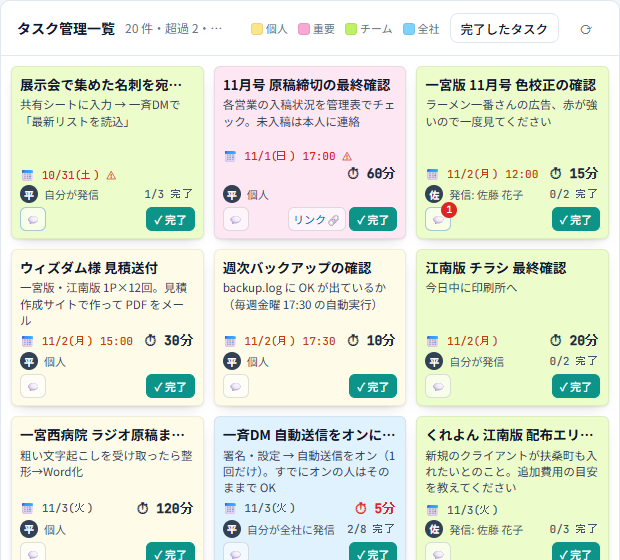
この順に押します
- 付箋の 「✓ 完了」 か、詳細の 「✓ 完了にする」 を押すと、付箋がボードから消えて「完了したタスク」に入ります。
- チーム・全社のタスクは、自分の分だけ 完了になります。発信した人には誰がいつ完了したかが伝わります。全員が完了するとタスク全体が完了です。
- 間違えて完了したときは、完了したタスク の「戻す」か、詳細の「未完了に戻す」で元に戻せます。
6質問・返事
動きで見る：質問を送る・直す
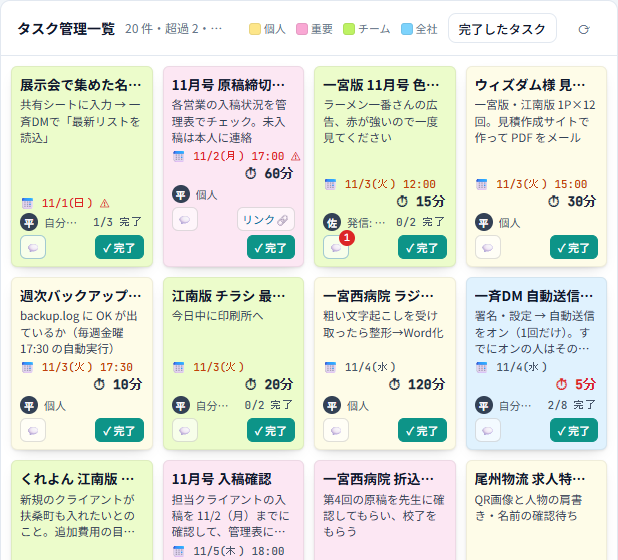
この順に押します
タスクについての質問や連絡は、詳細の下の「質問・返事」に書いて 「送る」 を押します。発信者と相手（自分以外）に届き、相手の付箋の 💬 に赤い数字（未読）が付きます。左のメニューのバッジでも未読の数が分かります。
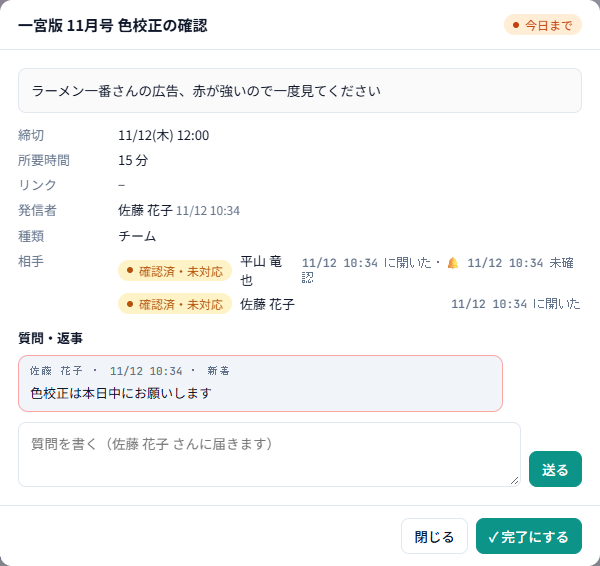
書いた質問を直す・消す
自分が書いた書き込みの下にだけ、小さく 「編集」「削除」 が出ます。
- 編集：その場で書き直して「保存」。「やめる」で元のままです。直すと「編集済み」と表示され、相手にはもう一度「新着」で知らせます。
- 削除：確認画面で「削除する」を押すと消えます。元に戻せません。ほかの人の返事は残ります。
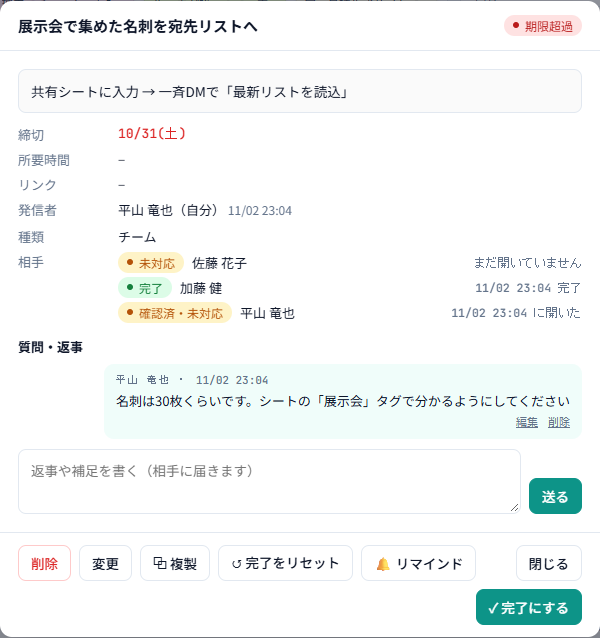
ほかの人の書き込みは直せません。質問・返事を書けるのは、そのタスクの発信者と相手です。
7発信したタスク
動きで見る：頼んだタスクの進み具合を見る
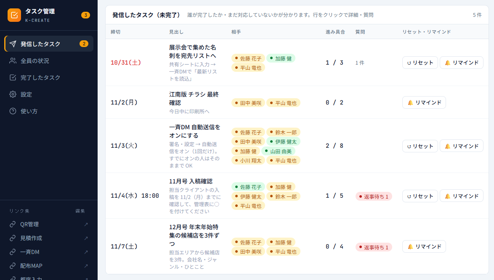
この順に押します
左のメニューの 「発信したタスク」 に、自分が人に頼んだタスク（まだ全員が終わっていないもの）が並びます。
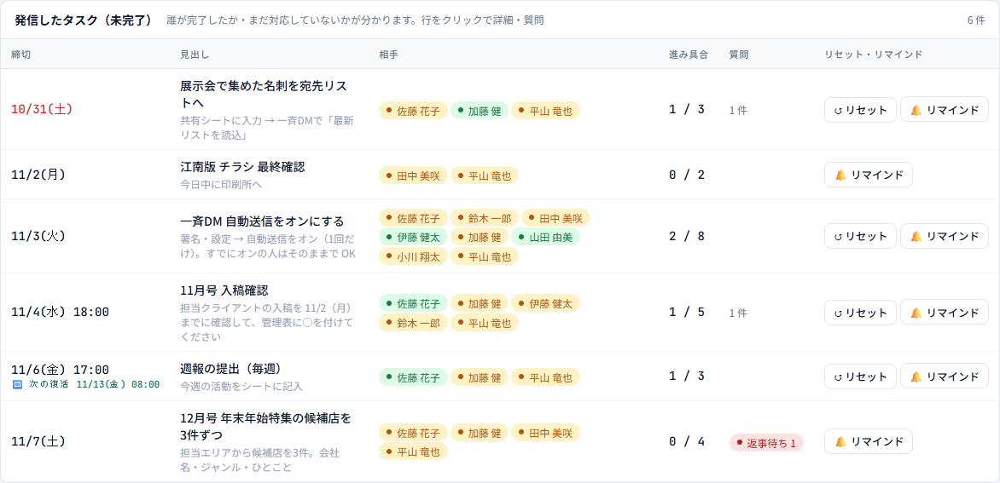
- 相手：名前の色で、完了（緑）／未対応（黄）が分かります。名前にマウスを当てると「まだ開いていない」なども分かります。
- 進み具合：完了した人数／全体の人数です。
- 質問：相手から返事・質問が来ていると「返事待ち」と出ます。
詳細でできること
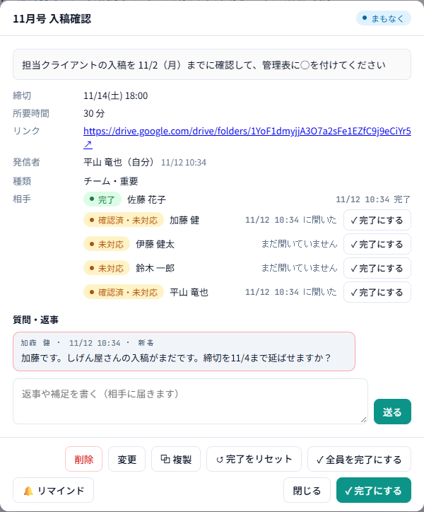
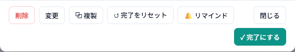
| 🔔 リマインド | 押したときだけ、まだ完了していない相手に「リマインド」のお知らせが画面に出ます（自分には出ません）。相手が「確認した」を押したかどうかも詳細で分かります。 |
|---|---|
| ↺ 完了をリセット | 完了した人を0人に戻して、全員のボードにもう一度出します。 |
| 変更 | 見出し・内容・締切・所要時間・リンク・重要・繰り返しを直せます。相手を 足す こともできます（外すことはできません）。 |
| ⧉ 複製 | 同じ内容で新しいタスクを作ります。右の「タスクの作成」欄に見出し・内容・締切・相手・繰り返しなどが入るので、直して「タスクを作成」を押してください。元のタスクはそのままです。締切が過ぎていたときは締切が空になるので、入れ直してください。 |
| 削除 | 確認のあと削除します。相手のボードからも消えます。 |
リマインドを受け取った側には、次のようなお知らせが出ます。見出しを押すとそのタスクが開きます。
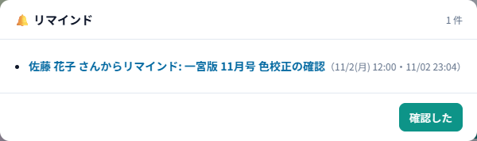
8繰り返し
動きで見る：毎月 第2火曜に繰り返す
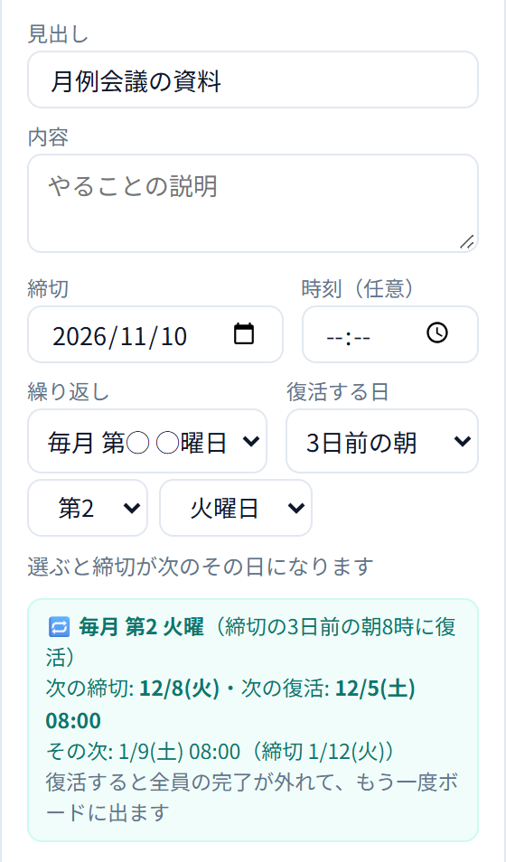
この順に押します
週報や月次の報告など、決まった周期のタスクは「繰り返し」を使うと、毎回作り直さなくて済みます。締切の日付が基準 になるので、締切は必ず入れてください。
| 繰り返し | 次の締切 |
|---|---|
| 毎週 | 締切と同じ曜日（1週間後） |
| 隔週 | 締切と同じ曜日（2週間後） |
| 毎月（同じ日） | 締切と同じ日にち（その日がない月は月末） |
| 毎月 月末 | 次の月の月末 |
| 毎月 第◯ ◯曜日 | 出てくる 「第1〜第4」と「曜日」 を選ぶと、締切が次のその日に自動で入ります。例：第2・火曜日 → 毎月の第2火曜（締切の日付を選んでも、プルダウンがそれに合わせます） |
| 毎月 最後の◯曜日 | 出てくる 「曜日」 を選ぶと、締切がその月の最後の◯曜日になります。例：毎月 最後の金曜 |
- 復活する日：次の締切の「当日」「◯日前」「◯週間前」の 朝8時 に、全員の完了が外れてもう一度ボードに出ます。
- 全員が完了しても、発信したタスクの一覧には「次の復活」の日時とともに残ります。
- 締切が第5週の日（例：第5金曜）は毎月はないので、「毎月 最後の◯曜日」を選んでください（画面にも案内が出ます）。
- 繰り返しをやめるときは、詳細の「変更」で「しない」にします。
履歴（発信者だけに見えます）
繰り返しのタスクは、詳細に 今回と前2回 の「開封」「完了」の日時が人ごとに出ます。締切に間に合わなかった回は赤くなり、「遅れ」に回数が出ます。締切より前に「↺ 完了をリセット」した回は、まだ終えていなかった人も遅れには数えません（「締切前にリセット」と出ます）。
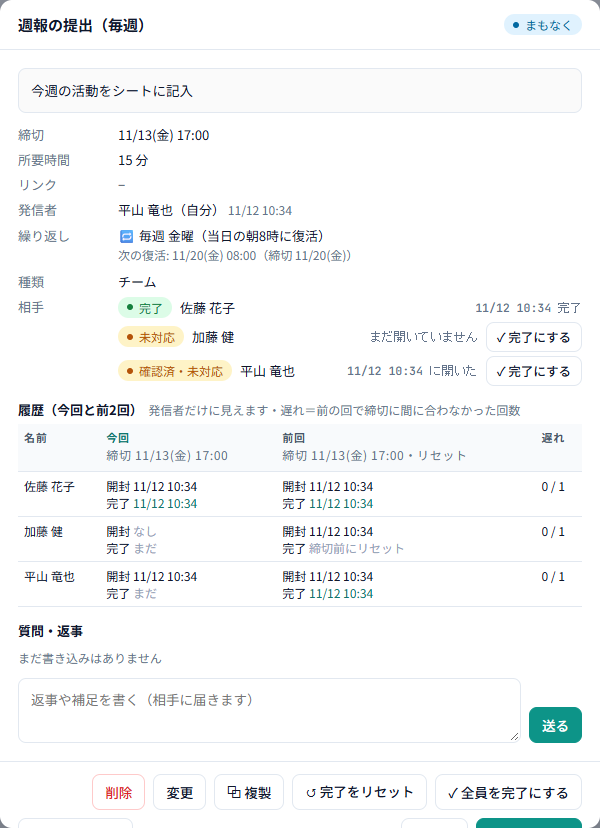
9完了したタスク
動きで見る：終わったタスクを見返す
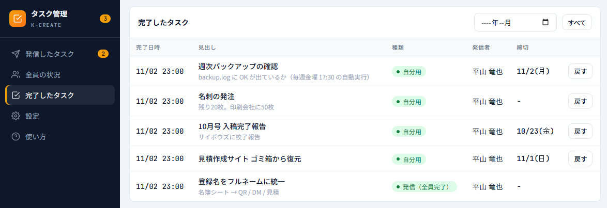
この順に押します
左のメニューの 「完了したタスク」（またはボードの右上のボタン）で、自分が完了したタスクを新しい順に見返せます。右上で月を選ぶと、その月の分だけになります（「すべて」で元に戻ります）。
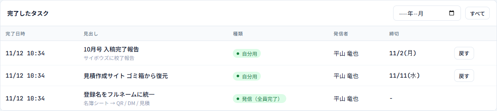
- 自分用：個人のタスク／共有（自分の分）：人から頼まれて自分の分を完了したもの／発信（全員完了）：自分が頼んで全員が終わったもの
- 「戻す」を押すと未完了に戻り、ボードにまた出ます。
10本日のスケジュールと Gmail の新着
動きで見る：予定を追加する
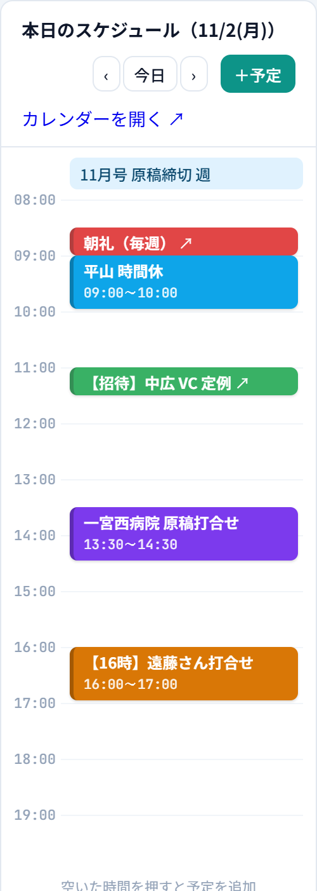
この順に押します
動きで見る：Gmail の新着を開く
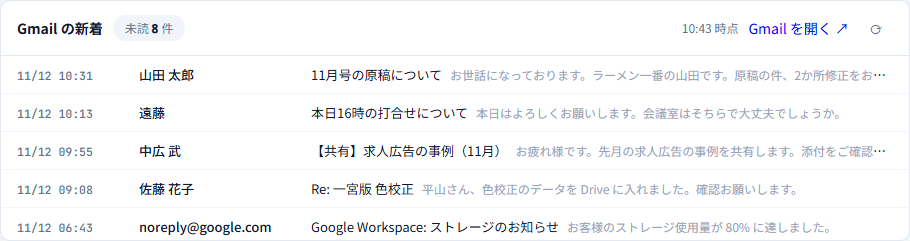
この順に押します
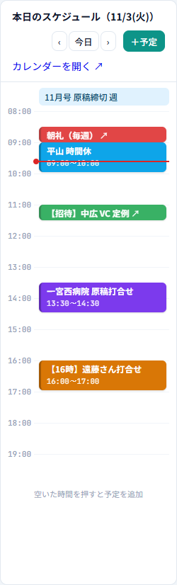
本日のスケジュール には、自分の Google カレンダー の予定が出ます。‹ › で前後の日、「今日」で今日に戻ります。
- 予定を追加：「＋予定」を押すか、時間の空いているところを押します。
- 予定を直す・消す：自分が作った予定を押すと編集画面が開きます。
- ↗ が付いた予定（人から招待された予定・繰り返しの予定）は、ここでは直せません。押すと Google カレンダーが開くので、そちらで直してください。
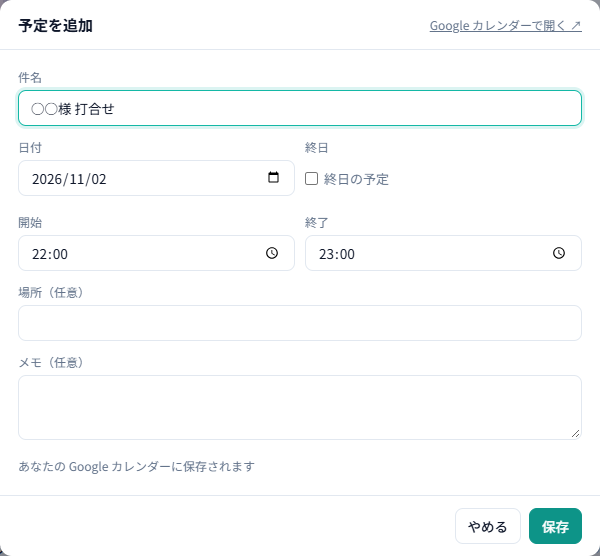
Gmail の新着 には、自分の受信トレイの 未読 メールが新しい順に出ます。行を押すと Gmail でそのメールが開きます。ここから返信や既読にはできません（見るだけ）。
11リンク集
動きで見る：リンク集を使う
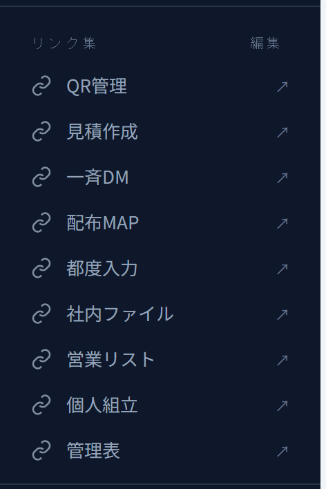
この順に押します
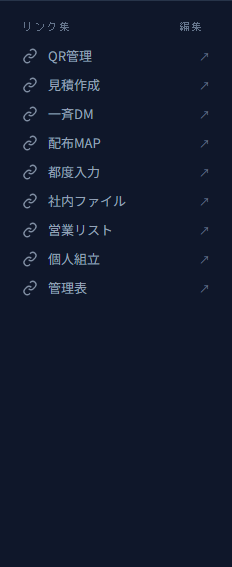
左下の リンク集 から、QR管理・見積作成・一斉DM などのよく使うサイトやフォルダを新しいタブで開けます。
リンク集の中身は管理者が「編集」で変えられます。 管理者
12全員の状況 管理者と、管理者が選んだ人だけ
動きで見る：メンバーの状況を見る
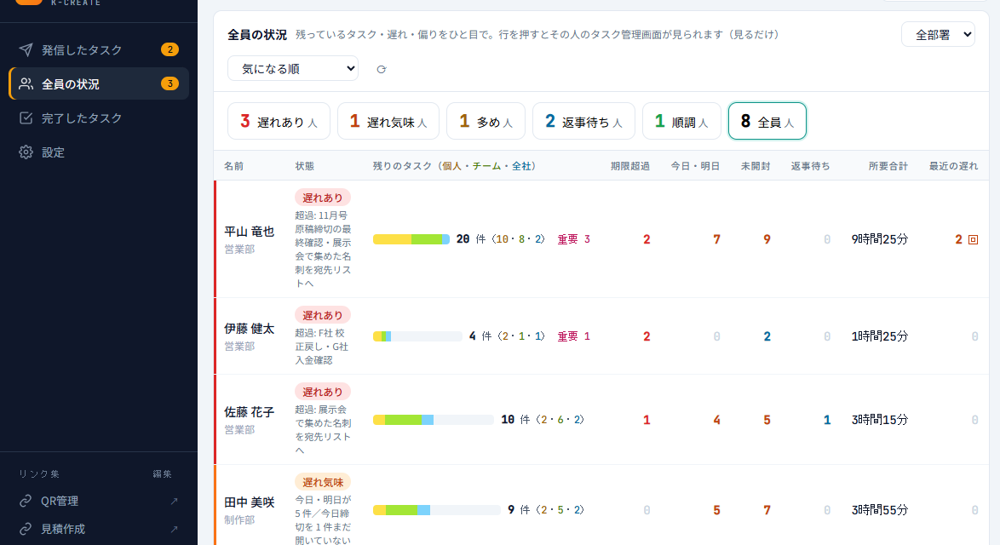
この順に押します
左のメニューの 「全員の状況」 で、全員の残っているタスク・遅れ・偏りが一覧で見られます。このメニューは、管理者と、管理者が設定で選んだ人にだけ表示されます。
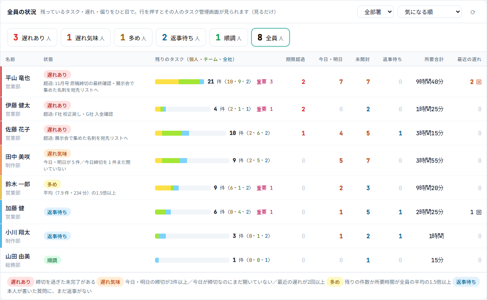
| 遅れあり | 締切を過ぎた未完了がある |
|---|---|
| 遅れ気味 | 今日・明日の締切が3件以上／今日が締切なのにまだ開いていない／最近の遅れが2回以上 |
| 多め | 残りの件数か所要時間が、全員の平均の1.5倍以上 |
| 返事待ち | 本人が書いた質問に、まだ返事がない |
上の数字のボタンで状態ごとに絞れます。部署と並べ方も選べます。行を押すと、その人のボードが 見るだけ で開きます（完了や書き込みはできません）。
13スマホで使う
動きで見る：スマホで使う
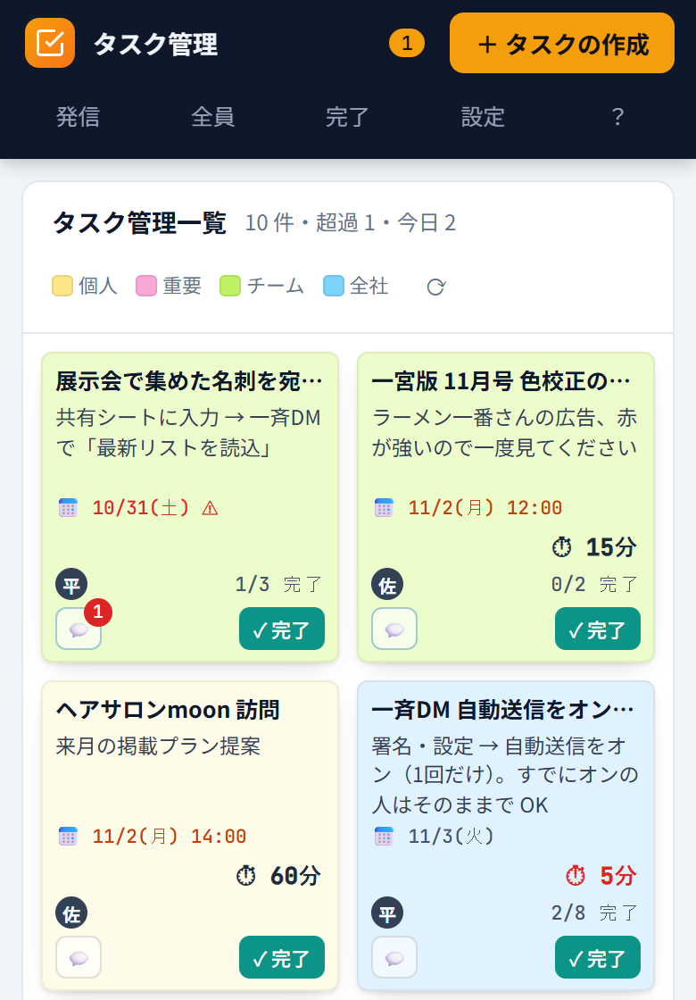
この順に押します
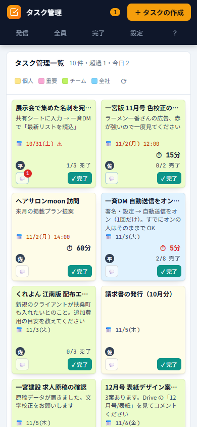
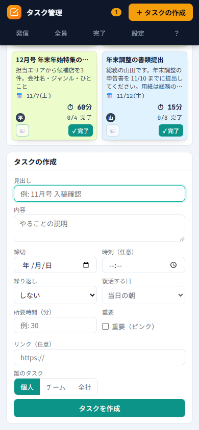
- スマホでは、タスク一覧 と タスクの作成 だけを縦に並べて表示します（スケジュール・Gmail・リンク集は出ません）。
- 上の 「＋ タスクの作成」 を押すと、下の作成欄に移動します。
- 上のメニュー（発信・全員・完了・設定）は、パソコンの左のメニューと同じです。いちばん上の右の「使い方ガイド」で、このガイドが開きます。
14管理者の設定 管理者だけ
動きで見る：「全員の状況」を見られる人を選ぶ
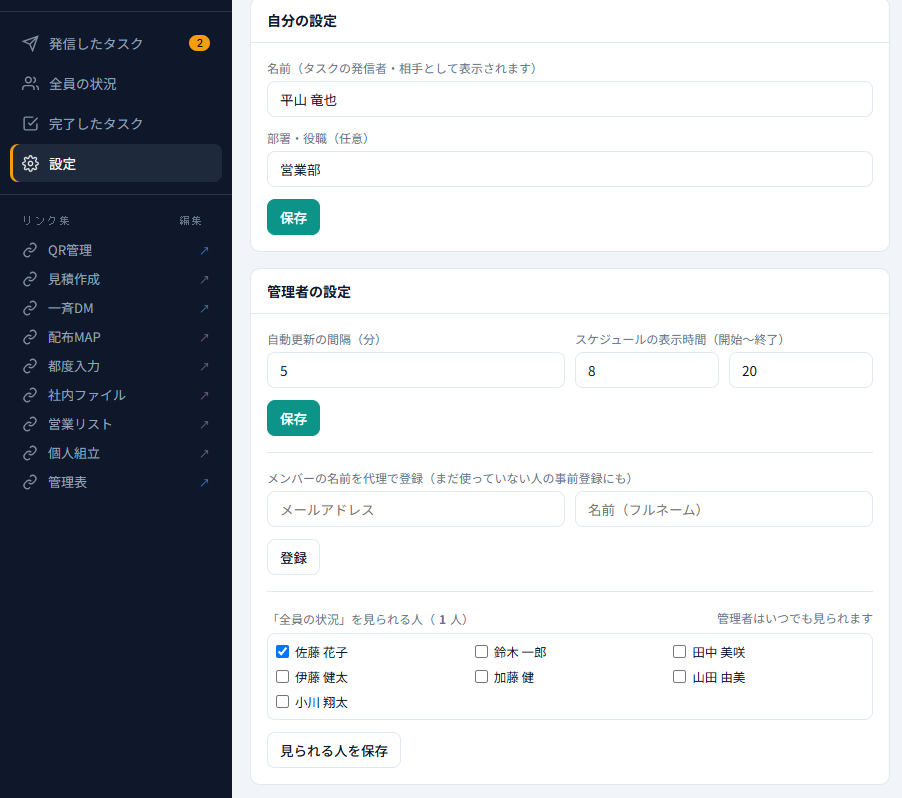
この順に押します
管理者は、どのタスクでも変更・削除・複製・リセットができます。メニューの 設定 に「管理者の設定」が出ます。
- 自動更新の間隔（分）：画面を開いている間に、何分ごとに新しい内容を読み込むか（リマインドのお知らせもこの間隔で出ます）。
- スケジュールの表示時間：本日のスケジュールに出す時間帯（開始〜終了）。
- メンバーの名前を代理で登録：まだ使っていない人の名前を先に登録できます。
- 「全員の状況」を見られる人：チェックした人も全員の状況を見られるようになります。
社内スタッフ名簿を直したあとに名前を取り込み直すときは、管理者がタスク管理の URL の最後に ?setup=staff を付けて開いてください。
15よくある質問
- 「許可」を求める画面が出ました。
- 機能が増えたときなどに出ます。自分の会社アカウントで「許可」してください。スケジュールや Gmail の欄の「許可する」ボタンからも許可できます。
- 新しい機能が見当たりません／表示が古いままです。
- ブラウザでページを再読み込み（F5 など）してください。開いたままの画面には、新しい機能は入りません。タスクの一覧だけなら ⟳ でも更新できます。
- 自分の名前が違う・名字だけになっています。
- 左下の自分の名前（「変更」）か、設定 → 自分の設定で直してください。
- チームのタスクを作ったら、自分のボードにも出てきました。
- チーム・全社のタスクは作った人も必ず対象になります。自分の分が終わったら「完了」してください。
- 頼まれたタスクを「完了」したのに、発信した人の画面ではまだ残っています。
- チーム・全社のタスクは、全員が完了するまで発信者の「発信したタスク」に残ります。誰が終わったかは名前の色で分かります。
- 付箋に赤い数字が付いています。
- まだ読んでいない質問・返事の数です。付箋を開くと既読になります。
- リマインドのお知らせが出ました。
- 発信した人が「🔔 リマインド」を押したタスクです。見出しを押すと開きます。「確認した」を押すと、発信者に「確認済」と伝わります。
- カレンダーの予定を押したら Google カレンダーが開きました。
- 人から招待された予定と繰り返しの予定（↗ が付いたもの）は、ここでは直せないため Google カレンダーで開きます。
- 間違えてタスクを削除しました。
- 削除したタスクは画面からは戻せません。管理者に相談してください。